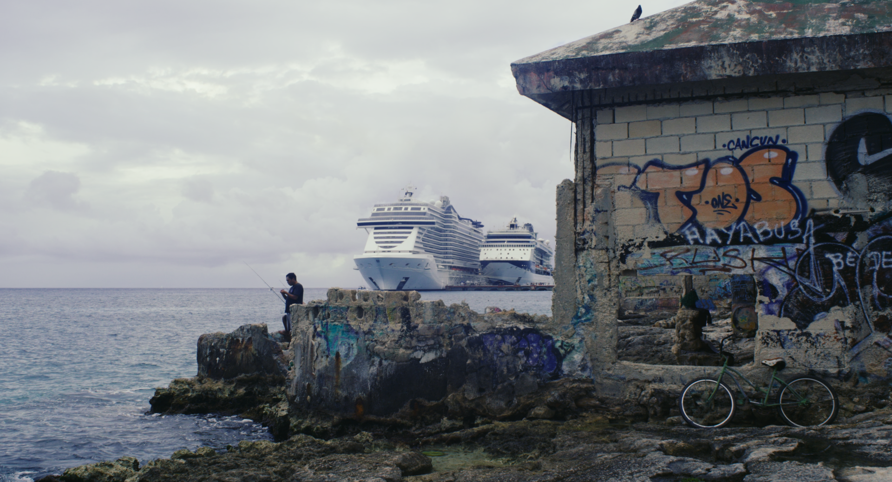
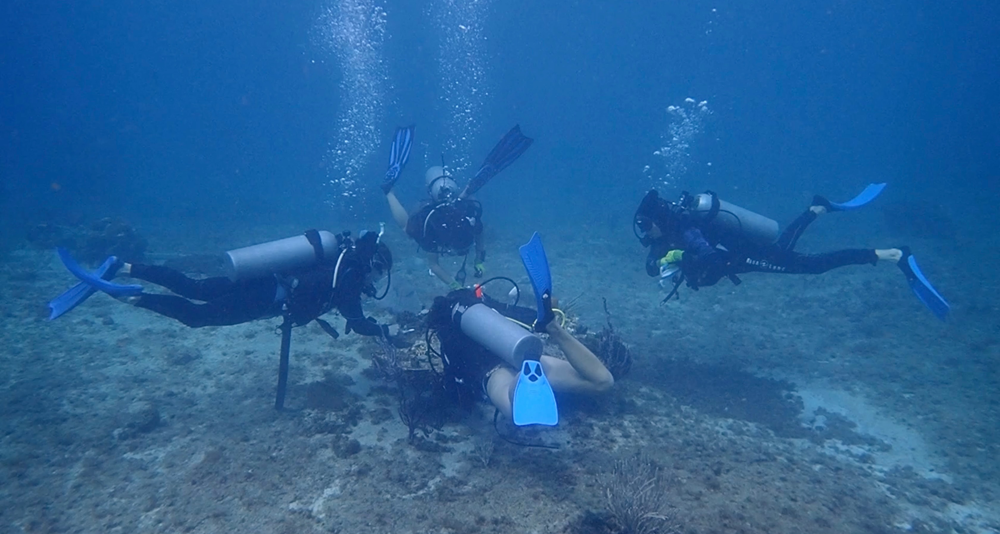
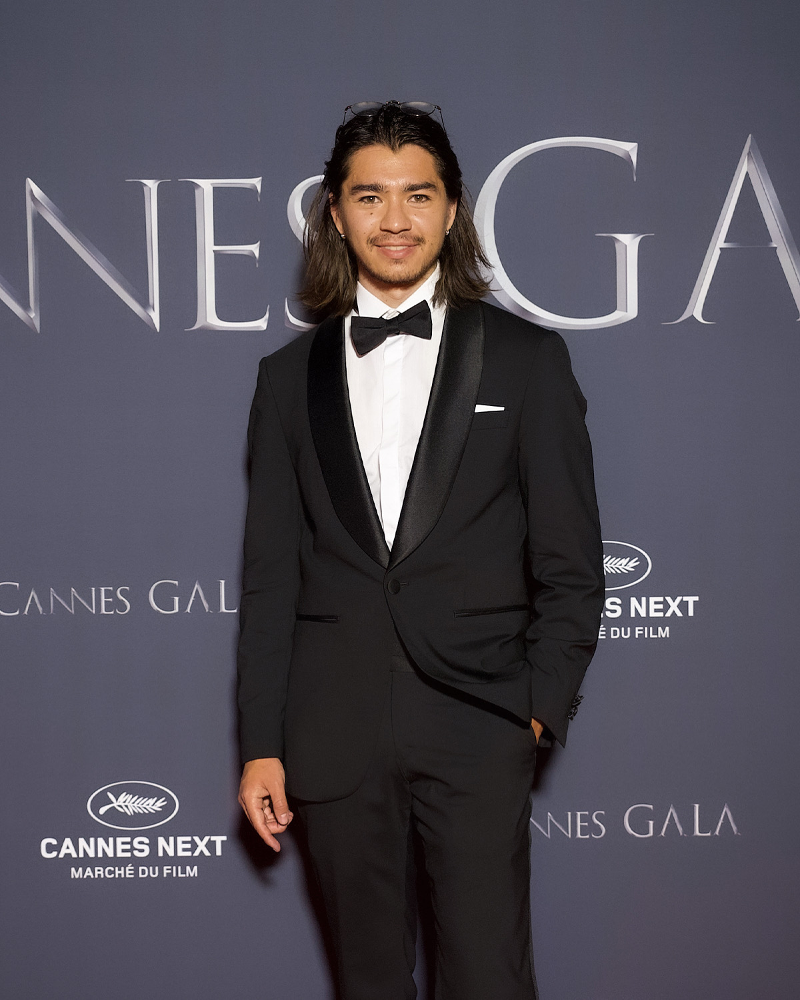
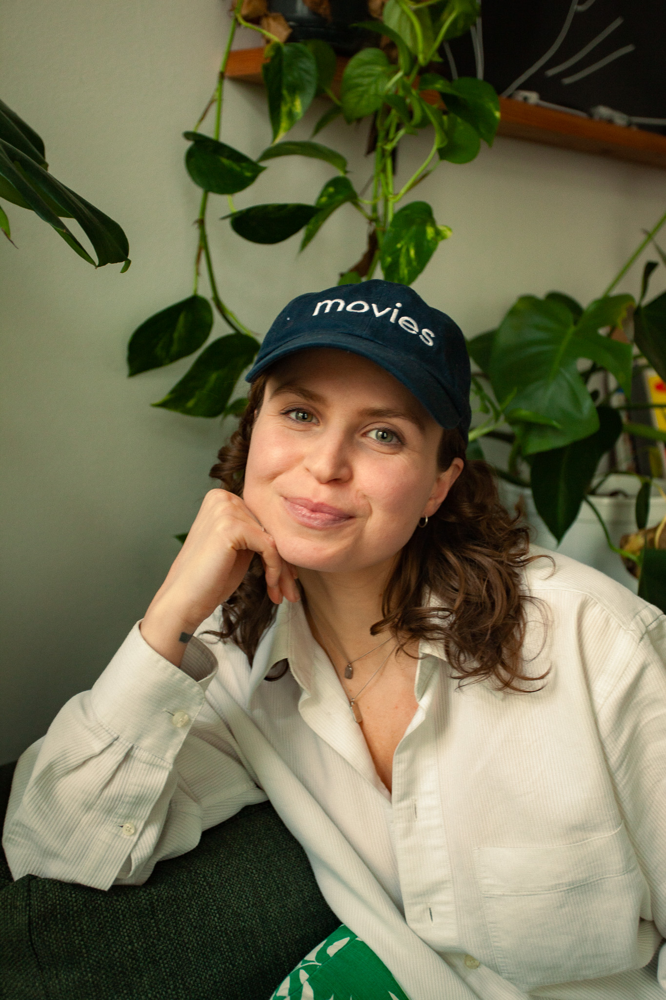
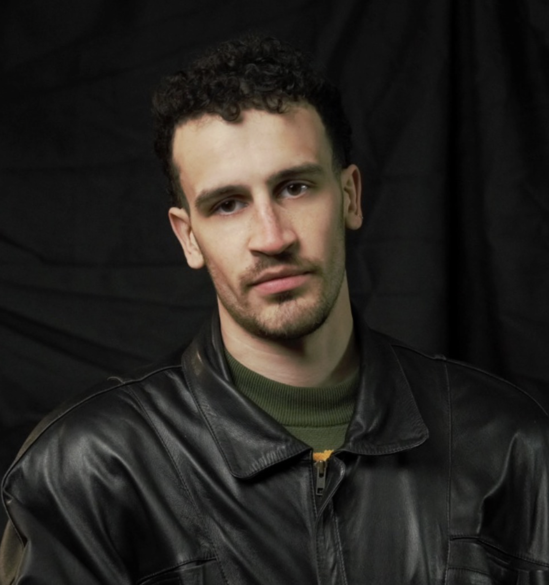
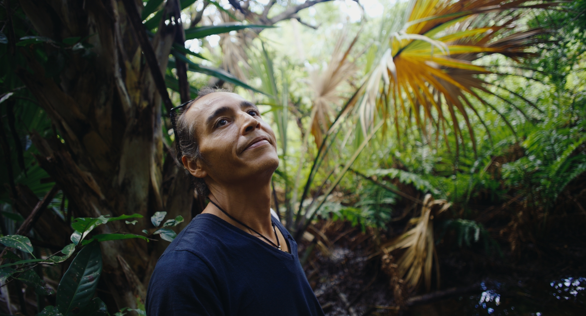

ISLANDOFSWALLOWS
As cruise ships devastate the coral reefs in the island of Cozumel and the local government plans to expand the tourism industry, a marine biologist’s fight for survival collides with a family’s search for paradise

Set in Cozumel, Mexico, this documentary follows two parallel threads: Germán, a solitary diver restoring coral reefs by hand, and an American family on a short holiday cruise, navigating the well-worn contours of leisure. One moves slowly, deliberately, embedded in the rhythms of the sea; the other is swept along by the temporal economy of break-time, itinerary, and return.
When their paths converge—during a reef dive led by Germán—a submerged reality begins to surface. What appeared as a backdrop to a tropical escape is in fact collapsing. The corals are not dying—they are already dead in many places, and what remains is held together by threads of labor, memory, and one man’s impossible commitment.
The film unfolds as a meditation on purpose and escapism—two parallel forces that shape how we choose to live, or look away.

Act I
Bright orange birds chirp at each other as part of their morning routine while Germán Méndez fries a couple of fresh eggs in his kitchen, styled with large Mexican tiles. He lives isolated in the jungle of Cozumel, Yucatán—the only island in Mexico with a jungle. Not a single sound of civilization, and Germán couldn’t be happier.
His grueling work consists of endless efforts to revive the long-forgotten reefs. His face is marked with deep grief—he’s seen firsthand the demise of the corals over the last 30 years. We follow him through his restoration site as the tragic story of Cozumel’s ecological disaster unfolds.
Across the Gulf of Mexico, a family with two children slam their doors and trip over oversized suitcases as they rush to a taxi waiting by the curb. A long-awaited holiday for the parents and an ecstatic adventure for the children. Soon, they’ll board a cruise ship—larger than the buildings lining the Miami skyline.

Act II
In a bitter twist, Germán’s work is partly funded by the very industry he resents. As part of his job, he leads diving tours for tourists—often arriving by cruise ships—who unknowingly contribute to the reefs’ destruction. He shows them the damage firsthand, sometimes blaming them outright, unable to contain his frustration.
But it becomes clear Germán has a purpose behind his actions. He wants to leave a mark on this earth before he perishes.
Soon, the family’s ship docks at one of many piers on Cozumel. They step onto the island, so foreign to them. Meanwhile, Germán gears up to lead another tour. In a short time, the family and Germán will meet—to face the uncomfortable reality of their vacation.
Germán takes them on a tour of the island. With a mixture of fury and almost pleasure, he shows them the destruction brought by tourism. The family watches—stunned—as their fantasy melts into the barren ashes of the trees below them.

Act III
The family, there to enjoy an escape on a tropical island, watches in dismay as they realize they’ve stepped into a wildlife cemetery. The question stands: with such limited options, are they really the problem? Their ignorance, their plea for a simple vacation, their fantasy of a foreign land.
Yet in weary steps, Germán’s attitude begins to shift. Beneath his critical remarks about the tourists, we glimpse a kind soul. Ultimately, it’s clear he wishes for the health of the land for all of us—it’s one man’s battle against a system so large, perhaps no single individual can stop it anymore.
The family and Germán share still moments. They laugh and reflect. Soon, the family departs. The return trip on the cruise feels familiar, but now through a different lens. They step back onto the soil of home, preparing for another day of work—their escape now over.
Germán wakes up to another day in the jungle. The birds chirp at the sight of their neighbor. The dogs chase chickens through the yard. He puts on his helmet, and we follow hitm along his daily route on his scooter. He nods at fellow islanders working food stalls, serving tourists.
Though he knows there is no easy escape from a system locked into society, he perseveres. For he does not aim to stop—until he sees his own children beneath the water saved.


Kaito Sashihara Martínez
| director / producerKaito Sashihara Martínez is a half Japanese half Spanish director and cinematographer focused on multicultural productions. He previously worked on productions across Spain, Germany, Mexico, Portugal, Sweden, and Japan. His skill set in niche guerrilla style productions paired with his underwater cinematography has set him on a path to a free-flowing journalistic working style.
Currently based in Berlin—where he earned his BA in Film Production from Catalyst Institute for Creative Arts—his debut short film “Pelargonía” led him to participate in the 78th Cannes Film Festival in the Short Film Corner. He is currently working on his first documentary feature as well as in pre-production for a fiction feature and an animated short film.

Jenny Jo Stokka
| ProducerJenny Jo Stokka is a creative producer with a passion for international auteur-driven cinema. She has produced films across Germany, Spain, and the U.S., and previously worked as a production coordinator in the fastpaced world of New York advertising. In 2022, Jenny earned her MA in Creative Producing from Catalyst Institute for Creative Arts in Berlin, where she sharpened her narrative instincts and collaborative leadership style.
In 2024, Jenny wrapped production on her first feature, “Berlin Loop,” slated for release in Fall 2025. Currently, Jenny is developing her second narrative feature, as well as her first documentary feature. Her work emphasizes inclusive, sustainable production practices and international collaboration. In 2025, she joined the producing team at Cota Mil Producciones in Barcelona, expanding her reach within the European market

Marco Puerto Marquès
| CinematographerMarco Puerto Marquès is a Spanish director and cinematographer with a focus on socially conscious and experimental cinema. He has spent three years working in Berlin, developing a versatile approach across documentaries, experimental short films, and narrative projects. His latest short film, Pelargonia, exploring depopulation in Spain, was selected for the Cannes Short Film Corner. Marco continues to expand his practice, working on new documentary and experimental projects while exploring innovative storytelling techniques.

Support the Film
If you want to make a donation to the film, you can support us through our fiscal sponsor or the crowd funding campaign. Any amount matters — thank you for your support!
Fiscal Sponsorship
HELP US!Contact
Capturing stories, preserving truths.
Jenny Jo Stokka | PRODUCER
Website: jennyjostokka.com
Instagram: @jennyjostokka
Phone: +49 157 7097 8689
Email: jenny.s@islandofswallows.com
Kaito Sashihara Martinez | DIRECTOR
Website: kaito-sashihara.com
Instagram: @kaito.sashihara
Phone: +49 176 8080 5934
kaito.s@islandofswallows.com